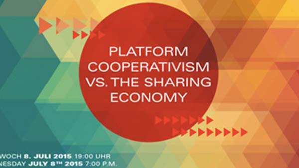

The Voice Republic Archive
12 Results
Sozialer Wandel und Politische Kunst in der Südosttürkei

Sprecher/In: Patrick Frank
Published 3 days ago by
nGbK
Independent Cultural Spaces in Turkey and Germany

Sprecher/In: Patrick Frank
Published Yesterday by
nGbK
Watching the Watchers: Building a Sousveillance State

Sprecher/In: Patrick Frank
Published November 10 by
re:publica15
A MAZE Masterclass: Rami Ismail in conversation with Leigh Alexander

Sprecher/In: Patrick Frank
Published August 24 by
AMAZE Berlin

Visual Diagnostics for Design Thinking Teams

Sprecher/In: Patrick Frank
Published Today by
HPI School of Design Thi...
Platform Cooperativism vs. the Sharing Economy

Sprecher/In: Patrick Frank
Published 3 days ago by
Rosa Luxemburg Stiftung
The digital surveillance state - Quo vadis, Democracy?

Sprecher/In: Patrick Frank
Published 3 days by
Courage Foundation

Fast Forward Africa - A Digital Movement moderated by Thorsten S. Wiedemann, Founder and Artistic Director of A MAZE.

Sprecher/In: Patrick Frank
Published 2 days ago by
Respawn